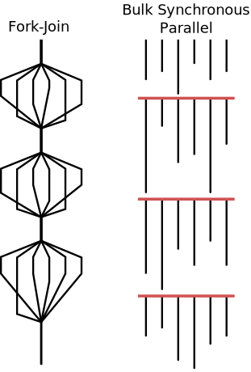
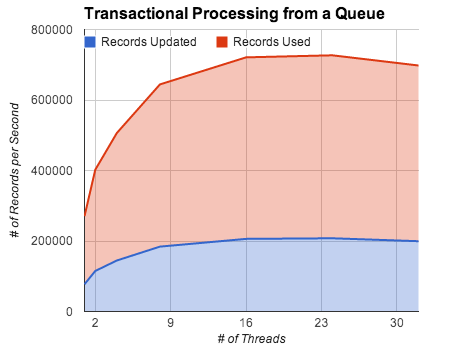
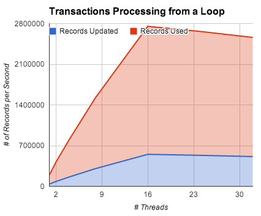
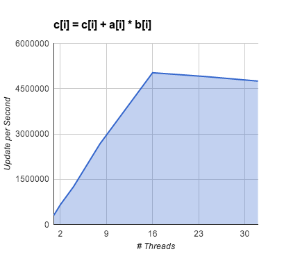
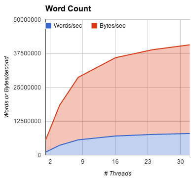

Extended Memory Semantics (EMS) complements serial programming
models with
transactional and other fine-grained synchronization capabilities
to support parallel programming.
Much of the challenge in implementing distributed and parallel
programs derives from finding, marshaling, and synchronizing
data. Extended Memory Semantics (EMS) unifies these tasks into a
single programming and execution model. EMS implements a shared
address space with a rich set of primitives for parallel access of data
structures. It is not a source of parallelism itself, instead it
complements other parallel programming models and integrates shared
memory data access and synchronization.
EMS leverages existing tool chains instead of replacing them and is
compatible with legacy applications, libraries, frameworks,
operating systems, and hardware.
Because EMS represents
memory and not processes, it may persist independently of any
application, and it's state may be replicated, archived, or forked.
Applications may attach and detach from the memory in much the
same way applications use a shared database or filesystem.
EMS internally stores tags that are used for synchronization of
user data, allowing synchronization to happen independently of
the number or kind of processes accessing the data. The tags
can be thought of as being in one of three states, Empty,
Full, or Read-Only, and the EMS primitives enforce
atomic access through automatic state transitions.

EMS Data Tag Transitions & Atomic operations:
F=Full, E=Empty, X=Don't Care, RW=Readers-Writer lock (# of current readers)
CAS=Compare-and-Swap, FAA=Fetch-and-Add
The function name readFE means "Read when full and mark empty",
writeEF means "Write when empty and mark full",
writeXF means "Write unconditionally and mark
full", etc. In the most simple case, full-empty tags are used
to block readers until memory is marked full by a writer thread
that itself blocks until the memory is marked empty. This is
effectively a dataflow or producer-consumer execution model that
may involve any number of producers and consumers.

EMS memory is an array of JSON primitive values
(Number, Boolean, String, or Undefined) accessed using atomic
operators and/or transactional memory. Safe parallel access
is managed by passing through multiple gates: First mapping a
key to an index, then accessing user data protected by EMS
tags, and completing the whole operation atomically.
The EMS array may be indexed directly using an integer, or using a key
mapping of any primitive type. When a map is used, the key and data
itself are updated atomically.
The full-empty primitives are
used construct other thread-safe data types such as
atomic read-modify-write operations and Transactional Memory (TM).
When the require('ems')(...) statement is executed by a program,
EMS first creates a shared memory region to rendezvous and
communicate with other EMS threads, then,
using the built-in
fork primitives,
creates the additional threads executing
using one of two execution models: fork-join or Bulk Synchronous Parallel (BSP).
BSP invokes the same script as the master thread (found in process.argv[2]),
whereas fork-join execution invokes parallel region around a function.
Under BSP, all threads execute the entire program unless statements are explicitly skipped.
Fork-join parallelism has a single entry point and executes sequentially
until a parallel region is started with ems.parallel( func ).

Fork-Join parallelism follows the traditional single-threaded execution
model until a parallel region where threads are dynamically added to
perform iterations of a loop. Under BSP parallelism every thread
enters the program at the main entry point.
Fork-join creates parallel regions
much like OpenMP's #pragma omp parallel directive.
Under BSP, all threads enter the main program and execute all
statements, synchronizing at barriers.
In addition to ordinary sequential loops,
within a parallel region ems.parForEach( func )
loops distribute iterations among the threads
using several load balancing scheduling options.
The master thread preserves all the characteristics and capabilities of
an ordinary
job, and all legacy applications, modules, packages, frameworks, and test apparatus
will work normally. Software that does not use EMS is not affected by it's presence.
Atomic operations like compare-and-swap (CAS) and fetch-and-add (FAA)
that are typically non-blocking will block if the full/empty
tag is set to empty.
Stack/queue operators are deadlock free,
blocking operations and should be thought of as thread-safe but not concurrent.
EMS transactions are also deadlock free and support element-level locking
for the highest possible currency.
Dataflow programs directly manipulating the full/empty tags
may deadlock if a program attempts to re-acquire a lock
already held, or acquire locks in a different order than other threads.
EMS programs may be run with any number of threads, including
single threaded and over-subscribed.

These experiments were run on an Amazon EC2 instance:
cr1.8xlarge: 244 GiB memory, 88 EC2 Compute Units, 240 GB of local instance storage, 64-bit platform, 10 Gigabit Ethernet

Using the general transactional memory capabilities to process
randomly generated operations stored in a shared work queue.

Transaction processing but generating the work from a loop instead of reading it from a shared queue.

Perform the operation c[i] = c[i] + a[i] * b[i] atomically

Word Count of documents from Project Gutenberg in a variety of languages. Average document was
about 250kb in length.
High-level data abstractions can be constructed from the EMS primitives, and EMS itself composes the primitives to implement transactional memory (TM), stacks, and queues. User defined composed operations can be added to EMS classes just as new methods are added to other JavaScript objects.
Transactional Memory (TM) provides atomic access to multiple shared objects in a manner similar to transactional databases. EMS implements mutual exclusion on specific data elements using the Full/Empty tags, and shared read-only access with a multiple readers-single writer tag.
Parallel-safe stacks and queues are built-in intrinsics based on Full/Empty tags. Stacks and queues are by definition serial data structures and do not support any concurrency. Although highly efficient, a shared resource like these can become a hot-spot when dozens of threads compete for access.
|
|
|
|
| Scaling Goal | Solve the same problem, only faster | Solve a bigger problem in the same amount of time |
| Problem Size | Stays constant while number of processors increases | Grows with the number of processors |
| Scaling is limited by | Inter-process communication | Problem size |
| Resiliency | Single failure causes entire job to fail, SLAs achieved through efficient checkpoint-restart. | Failed sub-tasks are detected and retried. SLAs achieved through fault resiliency. |
| Programming Models | MPI, GASNet, Chapel, X10, Co-Array Fortran, UPC | Batch jobs, Map-Reduce |
EMS builds on three experimental computer architectures from the 1980's: the NYU Ultracomputer, the MIT J-Machine, and the Tera Multi-Threaded Architecture (MTA). Specifically, the Ultra introduced combining networks as a basic architectural feature, the J-Machine made moving a task to data as easy as moving data to the processor, and the MTA used massive multithreading to mask latency and had fine-grained synchronization associated with the data, not tasks.
In addition to JavaScript, EMS can be added to other languages. Languages that can share the EMS API:
- Python
- C/C++
- PHP
- Java
- Perl
- Your name here
Other programs included with the distribution for demonstration, test, and benchmarking purposes.
- Matrix multiply
- Graph500
- Sobel Filter
- MongoDB Replica Server
A few years ago a proposed set of language extensions called RiverTrail was being supported by Intel and was implemented as a Firefox Plug-In. The hooks used by the extension are no longer supported in Firefox, and the future of RiverTrail is unclear. To the extent possible, EMS should implement RiverTrail extensions.